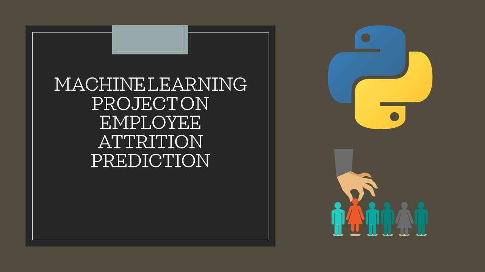

Developed a cancer type detection model that uses machine learning algorithms to classify cancer as malignant or benign based on input features.
Trained and optimized the model using a dataset with over 500 rows and 30 features, achieving an accuracy of 97%.
Built a web application using Flask to provide a user-friendly interface for making predictions
Skills demonstrated: Python, EDA, data wrangling, data visualization, Machine learning, HTML, CSS, Flask, AWS EC2
View project

E-Commerce Customer churn prediction
In this project I analyzed customer data from Telo comapny,
built three Machine Learning models to predict customer churn and companred their performance
based on their accuracy score. The Logistic regression model had the highest score of 79.67%
Skills demonstrated: Python, EDA, data wrangling, data visualization, Machine learning
View project

Healthcare Employee Attrition prediction
In this project I analyzed Heathcare employee data and built a Machine learning model to predict employee attrition.
I built the model using the logistic regression algorithm. The model had an accuracy score of 88.78%
Skills demonstrated: Python, EDA, data wrangling, data visualization, Machine learning
View project
Spotify Music Exploratory Data Analysis(EDA)
In this project I explored the music data from spotify in order to run some data analysis.
I found useful insights answering a few questions such as whether or not the loudness of the music
has a positive impact on the energy from the music.
Skills demonstrated: Python, EDA, data wrangling, data visualization
View project

Supplements Exploratory Data Analysis(EDA)
In this project I analized bodybuilding.com supplements in order to find out the effect of the product flavor
on overall customer's rating. Also found out whether or not the product pricing has a
negative impact on the product rating.
Skills demonstrated: Python, EDA, data wrangling, data visualization
View project

You can find all my Tableau Projects here. Click the button below.
Skills demonstrated: Tableau, data visualization
View projects

Projects' Data & Data Cleaning(SQL AND EXCEL)
Find all data used for my projects. Raw data as well as clean version of
the data(Cleaned in Sql and Excel)
Raw data
Clean data